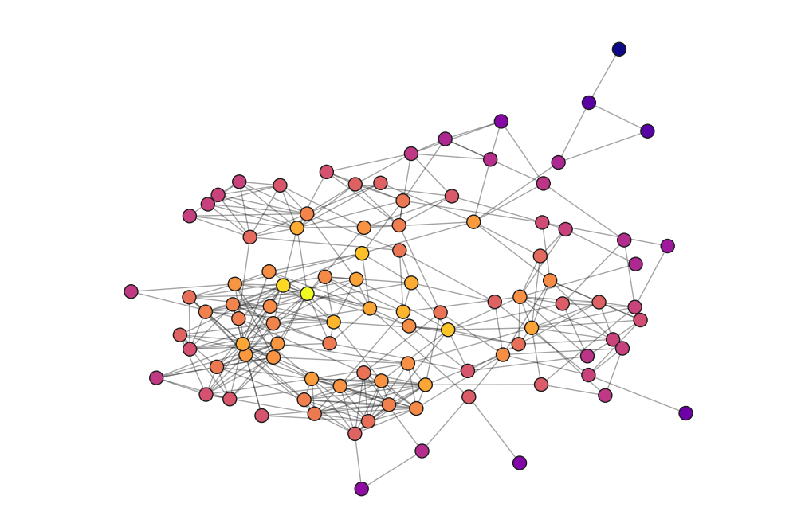

Projects
A collection of projects that have helped me learn throughout my programming journey.

Spotify Social
Node Express React PostgreSQL
A simple web app to share and connect with friends on data pulled from the Spotify API.

Runner Game
Rust Wasm Javascript WebGL
A simple 3D platformer game where you traverse levels as fast as you can using a spiderman-esque grappling hook ability.

3d Engine From Scratch
C++ Cinder
Right-hand rule on steriods.

Social Network Analysis
Python Seaborn Networkx
Collected friendship data from my high school senior class and wrote a data article sharing insights on our social environment.